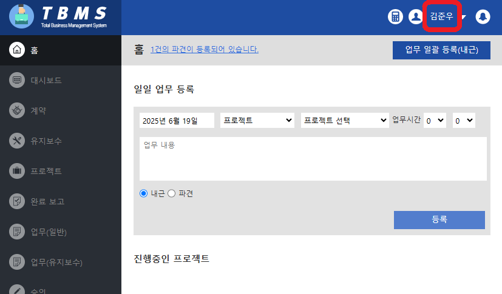
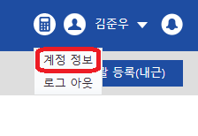
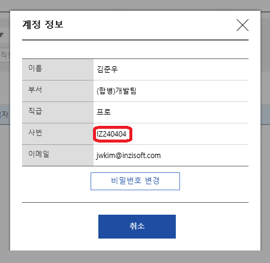
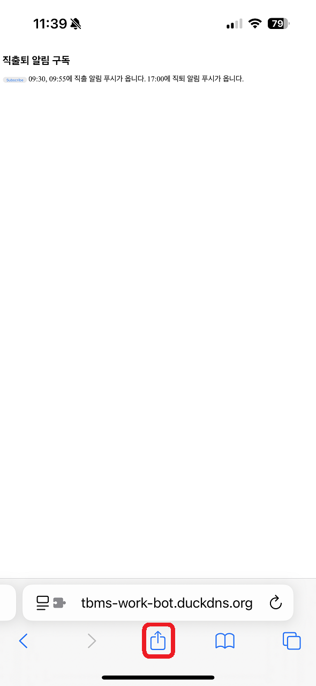
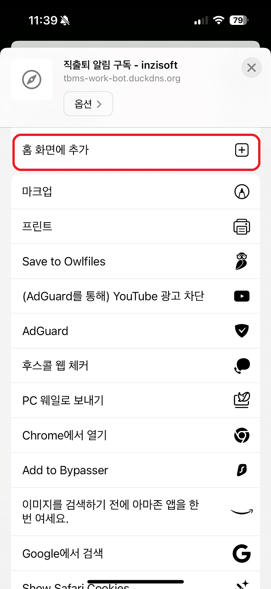
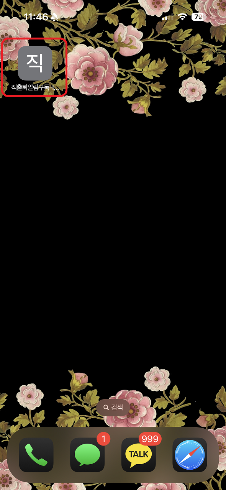

📌 사번 확인 방법

TBMS에 로그인 후 우측 상단의 이름을 클릭합니다.

드롭다운 메뉴에서 계정 정보를 클릭합니다.

계정 정보 팝업에서 사번을 확인합니다.
📌 아이폰(IOS 16.4이상) 사용방법

safari로 페이지를 연 후에 공유 버튼을 클릭합니다.

홈화면에 추가를 선택합니다..
 추가 버튼을 클릭합니다.
추가 버튼을 클릭합니다.

홈화면에 생긴 바로가기로 접속합니다.